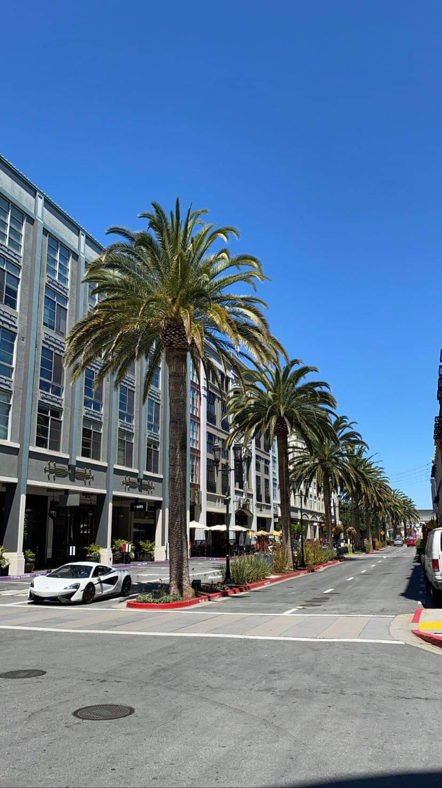
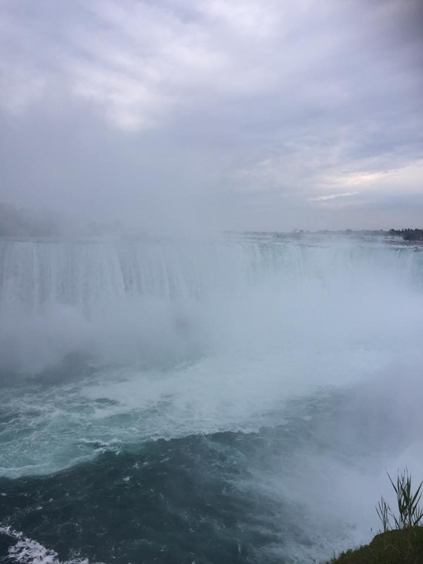

1. Karachi, Sindh, Pakistan 2. San Jose, California, United States of America

3. Niagara Falls, Ontario, Canada

My favourite place I visited was Sindh, Karachi, Pakistan. I last visited when I was 9 years old. I visited San Jose, California, in the United States of America when I was in grade 9 and I visit Niagra Falls every year.